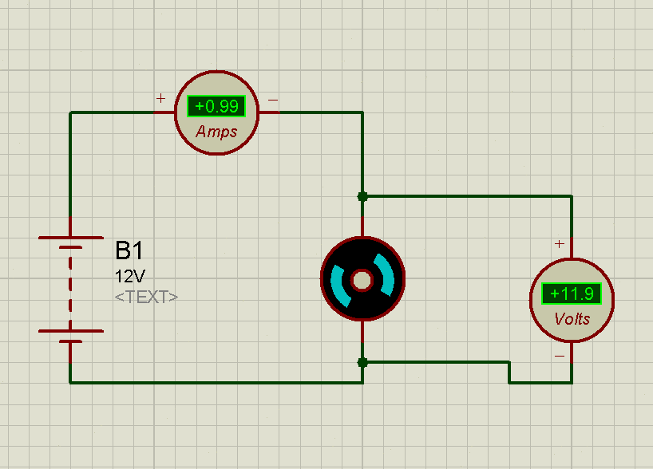

Comment peut-on récupérer les énergies de nos actions de tous les jours ?
Introduction
L’énergie est de de plus en plus prisée au fur et à mesure que la population humaine augmente. Elle est la source du mouvement et l’homme en a besoin pour vivre. Pour cela, il transforme différentes sources d’énergie en énergie électrique pour pouvoir ainsi contenter différents besoins. L’énergie électrique quant à elle possède la caractéristique de pouvoir être « déplacée » sur de longues distances de manière très rapide avec un bon rendement. Cependant, pour que l’électricité soit disponible de manière continue (prises électriques), des centrales électriques sont en fonctionnement perpétuel. Elle est ainsi produite en fonction de la consommation. Cette production a un coût au niveau environnemental : les déchets produits par les centrales (gaz à effet de serre, substances radioactives…). C’est pourquoi de de nouveaux modes de production durables sont apparus. Ils utilisent notamment les énergies naturellement présentes dans la nature (énergie solaire, géothermique, hydroélectrique…).
Dans ce TPE, nous avons décidé d’innover un nouveau mode de récupération d’énergie, qui possède la particularité de se baser sur des formes d’énergie que NOUS produisons mais qui ne sont pas utilisées ou bien gaspillées. Nous tenterons d’y répondre en réalisant une étude préalable du système, viendra ensuite l’élaboration d’un prototype qui réponde au besoin.
I. Conversions d’énergies
A. Comment définir une énergie ?
B. Caractériser la conversion d’une forme d’énergie
C. Où les retrouve-t-on ?
II. Nouveaux concepts de récupération d’énergie
A. Energies du futur
B. Piézo-électricité
C. Les problèmes de déploiement
III. Notre réalisation matérielle
A. La conception préalable
B. Quelles ont été les différentes contraintes ?
C. Les produits finaux
Conclusion
Bilans personnels
Florian
Toby
Sitographie
